<ion-menu side="start" menuId="first" contentId="main">
    <ion-content class="background">
        <div class="img-container">
        </div>
        <div class="list-container">
            <ion-list class="menu-list">
                <ion-item class="menu-item" [routerLink]=" ['/home']"><ion-icon name="home-outline"></ion-icon>Accueil</ion-item>
                <ion-item class="menu-item" [routerLink]="['/produit']"><ion-icon name="fish-outline"></ion-icon>Produits & Promotions</ion-item>
                <ion-item class="menu-item" [routerLink]="['/information', 'Restaurant']"><ion-icon name="restaurant-outline"></ion-icon>Restaurants</ion-item>
                <ion-item class="menu-item" [routerLink]="['/information', 'Recette']"><ion-icon name="book-outline"></ion-icon>Recettes</ion-item>
                <ion-item class="menu-item" [routerLink]="['/information', 'Bateau']">Bateaux</ion-item>
                <ion-item class="menu-item" [routerLink]="['/contact']"><ion-icon name="person-outline"></ion-icon>Contact</ion-item>
                <div class="media-container">
                    <button class="fb-button" large><ion-icon name="logo-facebook"></ion-icon></button>
                </div>
            </ion-list>
        </div>
    </ion-content>
</ion-menu>
